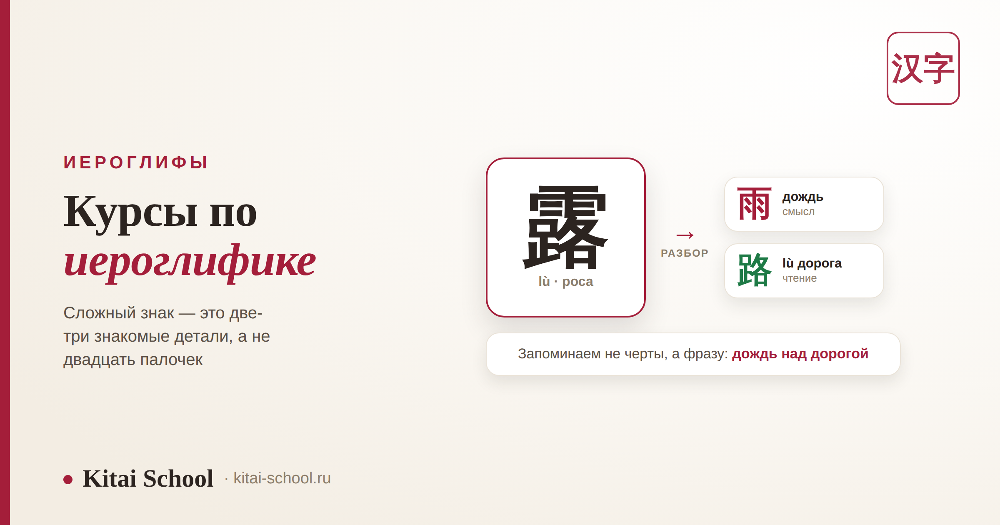
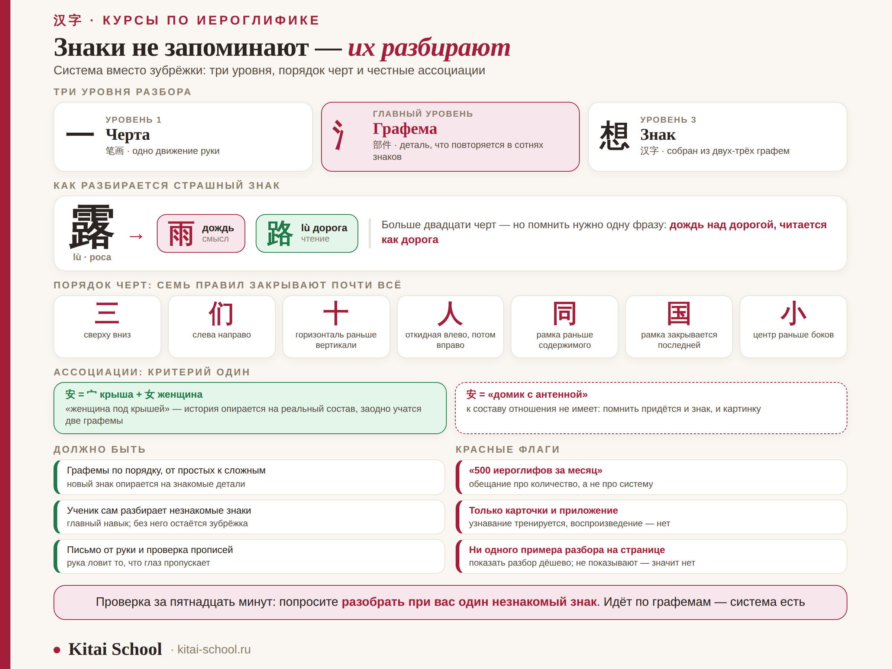

Иероглифы
Курсы по иероглифике: как выбрать программу с понятной системой


Страх перед иероглифами почти всегда устроен одинаково: человек смотрит на знак вроде 露 и видит два десятка палочек без всякого порядка. Запомнить такое целиком действительно невозможно — и не нужно. Знаки не запоминают, их разбирают: сложный знак собран из нескольких простых деталей, а те, в свою очередь, из черт. Разберём, как выглядит обучение, построенное на этом, и по каким признакам отличить курс с системой от курса со списками для зубрёжки.
Механическая память на иероглифах заканчивается примерно на второй сотне — дальше знаки начинают путаться между собой. Работает разбор по уровням: черта → графема → знак. Сложный знак раскладывается на две-три знакомые детали, и запоминать нужно уже не двадцать черт, а три детали. Порядок черт — не формальность: он даёт ровные пропорции, моторную память и понятный рукописный ввод. Ассоциации помогают, только когда опираются на реальный состав знака. В программе курса ищите разбор незнакомых знаков и письмо от руки, а не длинные списки слов.
Почему зубрёжка заканчивается на второй сотне
Первые полсотни знаков заучиваются легко: они простые, их мало, и каждый выглядит по-своему. Проблема начинается позже. Когда в голове набирается пара сотен знаков, они перестают быть непохожими — и начинают сливаться. Классические пары, на которых спотыкаются все: 未 и 末, 土 и 士, 日 и 目.
Причина простая. Если знак заучен как картинка целиком, у памяти нет ни одной зацепки, чтобы отличить одну картинку от другой почти такой же. А если знак разобран по составу, зацепки появляются: не «палочка сверху длиннее», а вот эта конкретная деталь на этом конкретном месте.
| Подход | Что происходит в голове | Чем заканчивается |
|---|---|---|
| Запомнить целиком | знак хранится как картинка без внутренней структуры | работает до второй сотни, дальше похожие знаки путаются |
| Разобрать по составу | знак хранится как набор знакомых деталей в определённом порядке | каждый новый знак опирается на уже выученные детали |
Отсюда и главный признак хорошего курса. Если программа обещает «300 иероглифов за месяц» и состоит из списков — вам продают ту самую зубрёжку, просто в красивой упаковке. Полезная программа сначала ставит систему разбора, а количество набирается уже само.
Три уровня: черта, графема, знак
Вот та самая система, и она короткая. В китайском письме три уровня, и путаница обычно возникает потому, что новичку показывают только первый и третий.
| Уровень | По-китайски | Что это | Пример |
|---|---|---|---|
| Черта | 笔画 bǐhuà | одно движение руки, не отрывая кисти | горизонталь 一, вертикаль 丨, откидная 丿 |
| Графема | 部件 bùjiàn | устойчивая деталь из нескольких черт, повторяется в сотнях знаков | 氵 вода · 木 дерево · 心 сердце · 口 рот |
| Знак | 汉字 hànzì | собранная из графем единица письма | 想 = 木 + 目 + 心 |
Средний уровень и есть главный. Черт в знаке может быть двадцать, а графем — почти всегда две-три. Именно поэтому разбирать нужно до графем, а не до черт: память работает с деталями, у которых есть имя и смысл, а не с набором палочек.
Графему часто путают с ключом. Ключ — 部首 (bùshǒu) — это одна конкретная графема, по которой знак ищут в словаре и которая задаёт смысловую область. Графема — любая повторяющаяся деталь, в том числе та, что отвечает за звучание. Как ключ подсказывает смысл, подробно разобрано в статье про значение ключей в китайских иероглифах.
Как разложить страшный знак: разбор на примере
Возьмём тот самый 露 (lù) — «роса», в нём больше двадцати черт. Целиком он не запоминается никак. А теперь разложим.
| Шаг | Что получается | Что это даёт |
|---|---|---|
| Делим пополам по горизонтали | 雨 + 路 | сверху дождь, снизу — знакомый знак «дорога» |
| Смотрим на верх | 雨 yǔ — дождь | смысловая часть: речь про воду с неба |
| Смотрим на низ | 路 lù — дорога | звуковая часть: 露 читается lù, ровно как 路 |
| При желании делим низ дальше | 足 + 各 | нога и «каждый» — так собрана сама «дорога» |
И страшный знак закончился. Запоминать нужно не двадцать с лишним черт, а одно предложение: дождь над дорогой, читается как дорога. Смысл подсказан сверху, чтение — снизу.
Тот же приём работает в обе стороны. Выучив одну звуковую графему, вы получаете сразу семью знаков: 青 (qīng) даёт чтение в 清 qīng «чистый», 请 qǐng «просить», 晴 qíng «ясный», 情 qíng «чувство». Слог один, тон гуляет — но круг вариантов сужается до нескольких.
Честная оговорка: звуковая графема подсказывает чтение приблизительно. Она сужает выбор, а не выдаёт готовый ответ, и в части знаков подсказка за века устарела. Курс, который обещает «читать любой незнакомый знак», обещает лишнее — а вот сузить догадку до двух-трёх вариантов система действительно позволяет.

Из личного опыта
Первый год я учила знаки честной зубрёжкой: тетрадь в клетку, строчка одного знака, строчка другого. Работало ровно до тех пор, пока их не стало около двух сотен. Дальше начался кошмар: я писала на контрольной 末 вместо 未 и искренне не понимала, в чём разница, — обе картинки в голове лежали одинаковыми.
Перелом случился на занятии, где преподаватель не стал ничего объяснять, а просто попросил разобрать незнакомый знак вслух. Я мычала минуты две. Тогда он показал, как это делается: сначала делим знак на части, потом называем каждую, потом собираем предложение. Мы разобрали подряд штук десять — и я вдруг увидела, что новых деталей почти нет, они все уже встречались.
С тех пор у меня есть личная проверка любого курса иероглифики. Я смотрю не на количество знаков в программе, а на одно: просят ли там ученика разбирать незнакомый знак самому. Если да — система есть. Если всё сводится к спискам и карточкам, вторая сотня всё равно случится.
Порядок черт: зачем он, если все печатают
Самый частый вопрос — и самое частое место, где курсы халтурят. Порядок черт (笔顺, bǐshùn) кажется формальностью: результат-то один. На бумаге — да. Но он даёт три вещи, за которые его и держат.
| Что даёт | Как это выглядит на практике |
|---|---|
| Ровные пропорции | знак сам собой встаёт в квадрат, не разъезжается и не заваливается |
| Моторную память | рука запоминает знак как одно движение, а не как схему для срисовывания |
| Понятный ввод | рукописный ввод на телефоне и поиск по начертанию распознают знак заметно точнее |
Самих правил немного, и они покрывают почти всё.
| Правило | Пример |
|---|---|
| Сверху вниз | 三 |
| Слева направо | 们 |
| Горизонталь раньше вертикали | 十 |
| Сначала откидная влево, потом вправо | 人 |
| Внешняя рамка раньше содержимого | 同 |
| Рамка закрывается последней | 国 |
| В симметричном знаке центр раньше боков | 小 |
В Китае порядок черт закреплён государственным стандартом и ставится в первом классе — не из любви к правилам, а потому что так знак усваивается быстрее. Проверить себя проще всего рукописным вводом на телефоне: если он упорно не узнаёт знак, который вы пишете, дело почти всегда в порядке.
Ассоциации: где помогают, а где мешают
Истории про иероглифы — приём рабочий, но у него есть условие, о котором обычно молчат. Ассоциация помогает, только когда опирается на реальный состав знака.
| Знак | Ассоциация | Что с ней не так или так |
|---|---|---|
| 安 ān спокойный | женщина под крышей | в знаке действительно 宀 «крыша» и 女 «женщина» — история и запоминает знак, и учит две графемы |
| 安 ān | похоже на домик с антенной | к составу отношения не имеет: придётся помнить и знак, и картинку, а в нужный момент вспомнится не то |
Критерий получается простой: если ассоциацию нельзя проверить по графемам, она лишняя. Хорошая история — это пересказ состава своими словами, а не картинка поверх него. Такая история заодно объясняет и соседние знаки, потому что графемы в них те же.
И отдельно — про «этимологию из интернета». Красивые рассказы про то, как знак произошёл от рисунка, часто оказываются выдумкой позднего времени. Если преподаватель разделяет «вот проверенная история знака» и «вот удобная мнемоника, чтобы запомнить», — это хороший признак. Если всё подаётся как древняя мудрость, часть материала вы потом будете переучивать.
Что должно быть в программе курса
Соберём всё сказанное в чек-лист. По нему можно пройтись прямо по странице любого курса.
| Пункт программы | Зачем он нужен |
|---|---|
| Графемы вводятся по порядку, от простых к сложным | каждый новый знак опирается на уже знакомые детали |
| Ученик сам разбирает незнакомые знаки | главный навык курса; без него остаётся зубрёжка |
| Есть письмо от руки, хотя бы понемногу | рука ловит различия, которые глаз пропускает |
| Порядок черт объясняют правилами, а не показом | правил семь, а знаков тысячи |
| Знаки идут вместе со словами | читают словами, а знание отдельных знаков текста не даёт |
| Есть повторение с растущими интервалами | без возврата к пройденному сыпется даже разобранное |
| Преподаватель проверяет ваши прописи | свои кривые черты вы не увидите, это видно со стороны |
Красные флаги
| Формулировка | Что за ней стоит |
|---|---|
| «500 иероглифов за месяц» | обещание про количество, а не про систему; вторая сотня всё равно случится |
| «Уникальная методика запоминания картинками» | ассоциации поверх состава вместо разбора состава |
| Только карточки и приложение | узнавание знака тренируется, воспроизведение — нет |
| Про порядок черт не сказано ни слова | вы будете срисовывать знаки, а не писать их |
| Ни одного примера разбора на странице курса | показать разбор — дёшево; если не показывают, скорее всего его нет |
| Знаки отдельно от языка | знаки без слов и текстов быстро выветриваются |
Проверить курс можно за пятнадцать минут, не оплачивая его. Попросите разобрать при вас один незнакомый знак — любой, хоть из меню ресторана. Если разбор идёт по графемам и вам объясняют логику, система есть. Если в ответ предлагают «просто запомнить, потом привыкнете», всё понятно.
Как это устроено у нас
Раз уж мы прошлись по чек-листу, честно приложим к нему себя. Курс по иероглифике китайского языка в Kitai School построен ровно на разборе: сначала базовые графемы, потом сборка знаков из них, потом самостоятельный разбор незнакомого — с прописями, порядком черт и проверкой того, что вы написали рукой.
Знаки идут не отдельным списком, а вместе со словами и короткими текстами, чтобы выученное сразу встречалось в деле. Что именно входит в программу и как идут занятия — на странице курса.
И совет, который стоит дать независимо от того, куда вы пойдёте: перед оплатой попросите показать один урок или разбор одного знака. Пятнадцать минут живого разбора скажут о курсе больше, чем вся страница с описанием программы.
Частые вопросы (FAQ)
Можно ли выучить иероглифы без курса, самостоятельно?
Можно, и многие так делают. Вопрос в том, сколько времени вы потратите на то, чтобы самостоятельно нащупать систему. Курс экономит именно это: вам сразу дают порядок, в котором графемы вводятся одна за другой, и показывают разбор на живых примерах. Если решаете идти сами, начните не с длинных списков слов, а с базовых графем и правил порядка черт — дальше знаки начнут раскладываться сами.
Что такое графема и чем она отличается от ключа?
Графема, или компонент — 部件 (bùjiàn), — это любая повторяющаяся деталь, из которых собран знак. Ключ, он же радикал — 部首 (bùshǒu), — это одна конкретная графема, по которой знак ищут в словаре и которая обычно задаёт смысловую область. То есть все ключи являются графемами, но не все графемы — ключи. Для запоминания важнее графемы целиком: их в знаке может быть три-четыре, а ключ всегда один.
Нужно ли учиться писать от руки, если всё набирают на телефоне?
Писать быстро и красиво — необязательно, а вот проходить знак рукой хотя бы несколько раз стоит. Рука запоминает то, что глаз пропускает: именно при письме вы замечаете, что 未 и 末 отличаются длиной верхней черты. Плюс рукописный ввод на телефоне распознаёт знак заметно лучше, когда черты идут в правильном порядке.
Зачем нужен порядок черт, если результат один и тот же?
Результат один и тот же только на печати. Порядок черт даёт три вещи: знак получается ровным по пропорциям, рука запоминает его как единое движение, а рукописный ввод и словари по начертанию начинают вас понимать. В Китае порядок черт закреплён государственным стандартом и его учат в первом классе — не из любви к формальностям, а потому что так знак усваивается быстрее.
Помогают ли ассоциации и «истории» про иероглифы?
Помогают, если история опирается на реальный состав знака. «Женщина под крышей» для 安 работает, потому что там действительно 宀 и 女. А выдуманная картинка, которая противоречит составу, добавляет вторую вещь для запоминания вместо одной и в нужный момент подводит. Простой критерий: если ассоциацию нельзя проверить по графемам, лучше её не брать.
Сколько знаков нужно выучить, чтобы читать?
Смотрите не на число знаков, а на число слов: в современном китайском большинство слов состоит из двух знаков, и знание отдельных знаков ещё не даёт понимания текста. Подробно про это разница разобрана в статье о том, сколько иероглифов и слов нужно на каждом уровне HSK. Для чтения простых текстов обычно ориентируются на пару тысяч знаков, но приходит это не списком, а через слова и чтение.
Если знаки пока выглядят набором палочек — приходите на пробное занятие. Разберём вместе пару сложных иероглифов, покажем, как это делается, и вы сами решите, нужен ли вам курс по иероглифике. Первый урок — бесплатный.
Или напишите слово ИЕРОГЛИФИКА нашему менеджеру в Telegram — подберём формат под ваш уровень.
Дальше по теме: как ключ подсказывает смысл знака — значение ключей в китайских иероглифах; из чего вообще состоит письменность — в Китае буквы или иероглифы; разбор одного знака целиком — как устроен иероглиф «вода»; сколько знаков и слов нужно по уровням — требования HSK к количеству.
Источники
- Практика Kitai School — преподавание иероглифики и разбор ученических прописей.
- Государственный стандарт порядка черт современного китайского письма (КНР).
- Методика 对外汉语 — преподавание китайского как иностранного, порядок ввода графем и знаков.
Пусть знаки перестанут пугать! 加油！